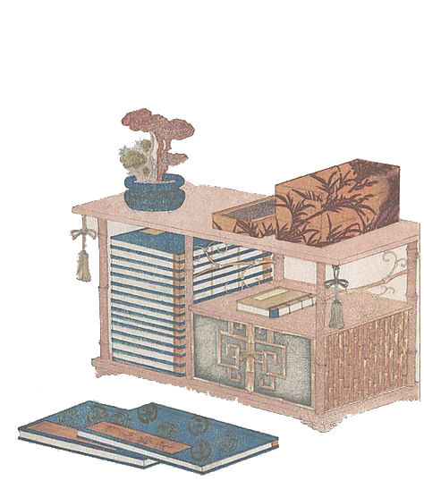

Chinese Architecture
Follow the changes of dynasties to see the changes and development of Chinese architecture
through the ages from the picture scroll.
- 2 Stop
The second stop we browse the ancient architecture from Yuan dynasty to Qing Dynasty. In terms of architectural ideas, Ancient Chinese architecture embodies a clear idea of ritual and pays attention to hierarchy: form, color, scale, structure and components, and the unity of nature and humanity is emphasized.
DYNASTY

Wenxi Li
GRPH-3017
Citation: Palace Museum | Shanghai Museum
Nov 11, 2021

Place your mouse over the small
images to show more details.